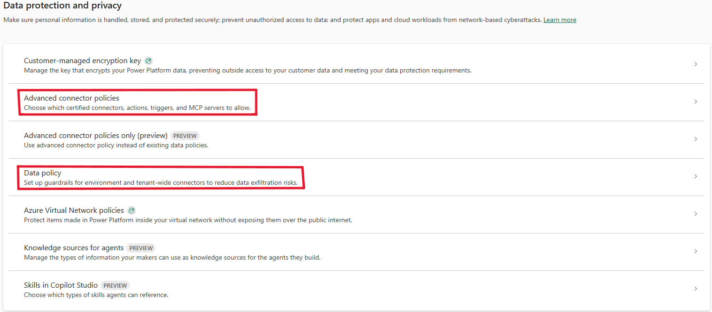
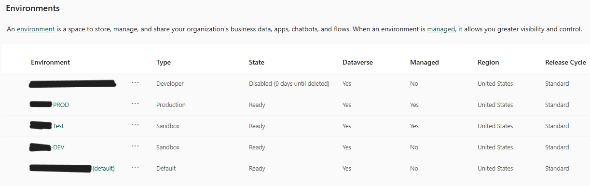

The Problem
Before this work, Power Platform had no dedicated administration. There was a single Default environment with no separation between development, testing, and production, no connector governance in place, and no formal access model — every flow and app was built and run in the same space as ungoverned personal productivity tools, creating risk of accidental data exposure with no safe way to validate changes before they reached live business processes.
What I Built
I designed and stood up a proper environment strategy — Default, DEV, TEST, and PROD — establishing a documented application lifecycle (build only in DEV, validate only in TEST, publish only in PROD) so nothing reaches production without going through a managed solution import. I built connector governance from the ground up using Power Platform's Data Policy and Advanced Connector Policies, approving connectors on an as-needed basis tied to what each solution actually required. I also established a least-privilege access model and created a governance hub documenting environment purpose, roles, naming conventions, and access request procedures so the practices don't depend on institutional memory.
How It Works
- 4 environments total: Default (personal productivity only, IT-only access), DEV (all app/flow development, Makers build here), TEST (Managed Environment enabled, validation-only, mirrors production, no building allowed), PROD (Managed Environment enabled, no Makers, all changes arrive via managed solution import)
- End-to-end ALM enforced: solutions built in DEV, exported as Managed, imported to TEST for validation (functionality, permissions, integrations), then promoted to PROD after approval — no direct editing in TEST or PROD
- Connector access governed through Data Policy and Advanced Connector Policies, approving connectors per-solution and as-needed rather than blanket access

- Access model built on least privilege: 2 Environment Admins manage all environments; a BI team holds Maker access to build flows, apps, and solutions within approved environments, with no broad standing access beyond that
- New permissions (environment access, Maker role, connector requests) go through a formal request process rather than ad hoc grants, closing off the privilege-creep risk that existed before
- Documented ownership model: every app requires an owner plus a backup owner

Impact
- Went from zero environment separation to a documented four-environment ALM pipeline
- Closed the connector governance gap — from no connector policy at all to a controlled, as-needed approval process
- Replaced an informal/no access model with a least-privilege structure — a small, defined set of admins plus a scoped Maker group, both gated by a formal request process
- Established the baseline that all subsequent Power Automate flows and the org's AI governance work were later built on top of